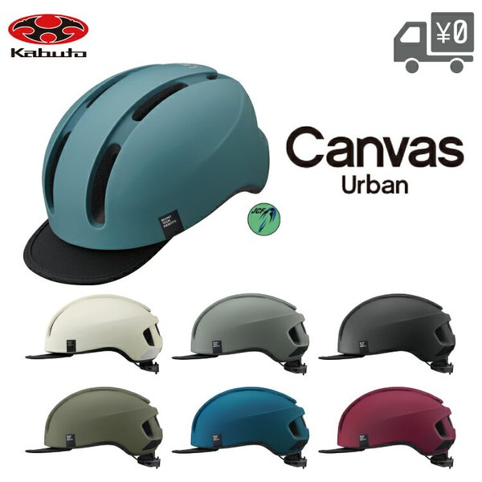
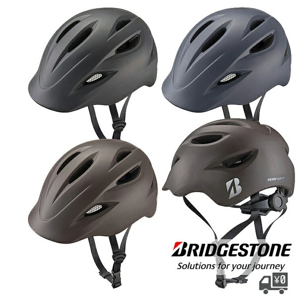
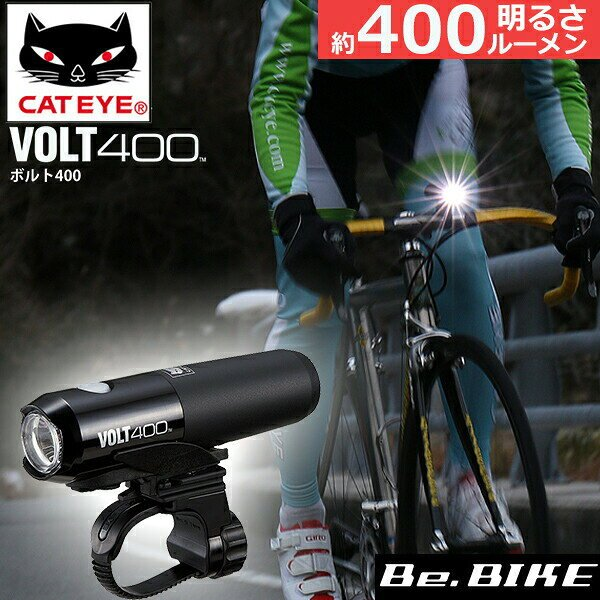
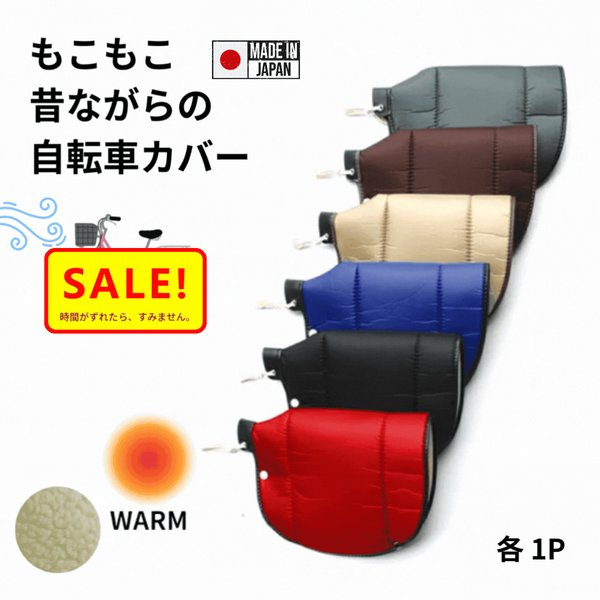
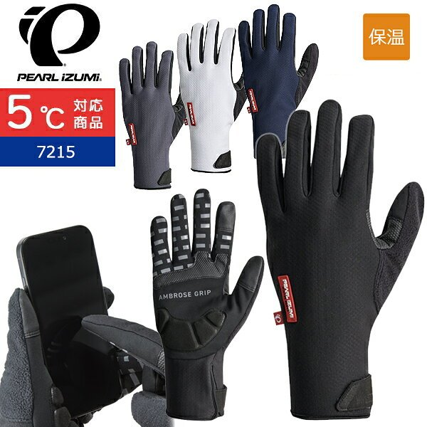
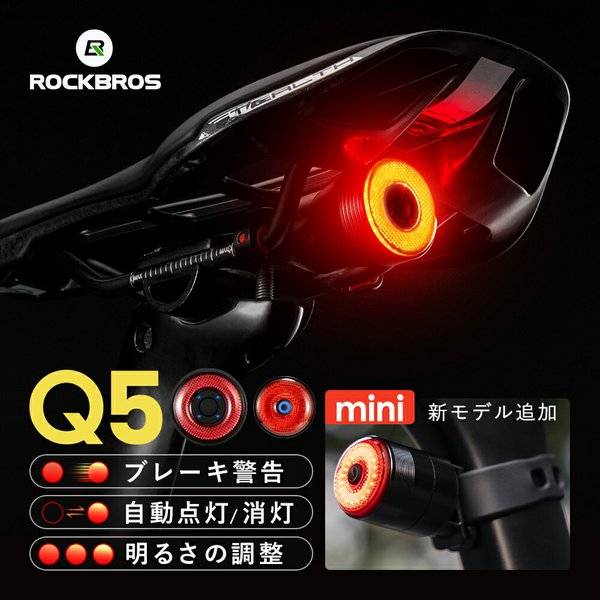
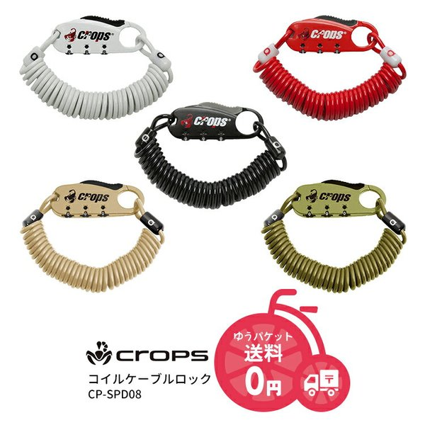
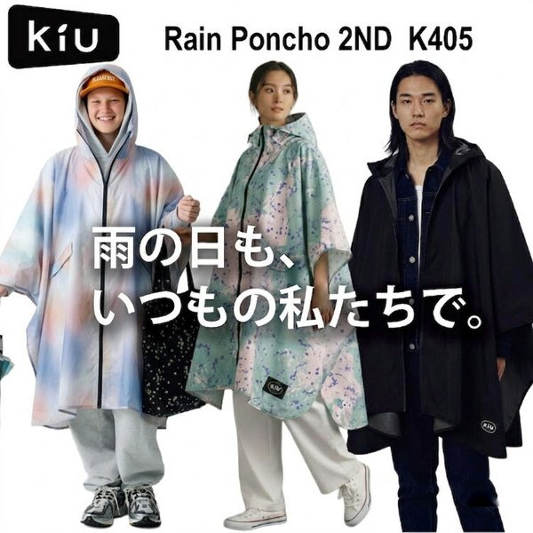
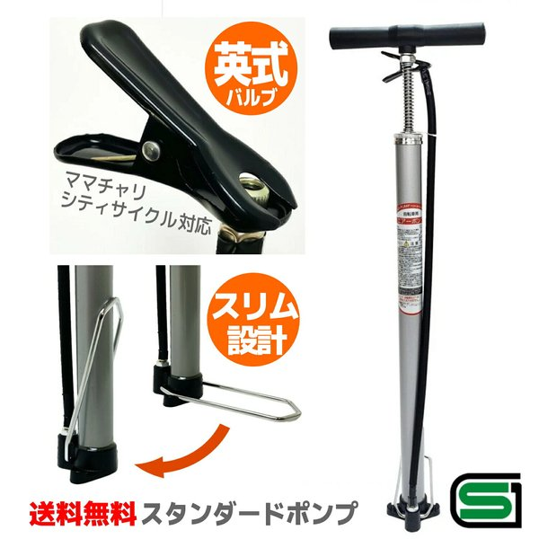
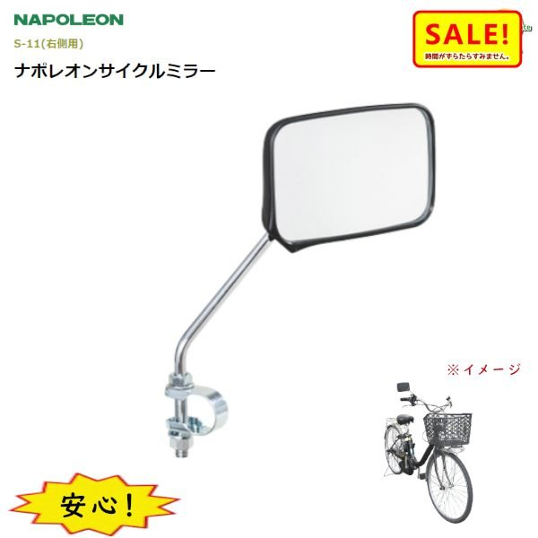

【2026年冬】自転車通勤・通学・電動アシストが快適＆安全に！ヘルメット・防寒ハンドルカバー・LEDライト・ワイヤーロック＆サイクル雨具10選
自転車通勤の冬は、寒さそのものより「装備の不足」でつらくなります。手袋をしていても指先が痛い、日が落ちて前が見えない、雨の日にびしょ濡れになる。どれも道具で解決できる問題です。
揃える順番は決まっています。まずヘルメット。2023年4月から自転車のヘルメット着用は努力義務になり、通勤・通学の距離ならなおさらです。次にライト。冬は17時台に暗くなるので、帰りの時間帯を照らせる明るさが要ります。そして防寒。ハンドルカバーと冬用グローブは、手袋だけより明確に違います。最後に鍵と雨具。鍵は「短時間用のワイヤーロック＋自転車屋で買うU字ロック」の2本立て、雨具は自転車用に作られたポンチョを選ぶと、走行中に裾がめくれません。空気圧と後方確認の道具も、月1回の手入れと合わせて揃えると安心です。
本記事では、楽天市場で人気・高評価の自転車通勤・通学の冬装備10選を、実売価格とレビュー評価つきで写真付き紹介します。
- おすすめ10選 スペック・特徴比較表
- BEST 1｜Canvas Urban キャンバスアーバン 帽子型ヘルメット
- BEST 2｜クルムス KURMS CH-BSM
- BEST 3｜VOLT400 HL-EL461RC USB充電式ヘッドライト
- BEST 4｜日本製 防寒ハンドルカバー（ボア付き）
- BEST 5｜ウィンドブレーク ウィンターグローブ 7215（5℃対応）
- BEST 6｜スマートテールライト（ブレーキ警告・自動点灯）
- BEST 7｜コイルケーブルロック Q3 CP-SPD08
- BEST 8｜レインポンチョ 2ND K405
- BEST 9｜SG規格 フロアポンプ（英式バルブ専用）
- BEST 10｜サイクルミラー S-11（右用）
- 【読者負担0円】買わなくても得する無料サービス
- まとめ：自転車通勤・通学の冬装備10選の選び方
| 順位 | 商品名 | ブランド | 最大の特徴・おすすめ理由 | 総合評価 |
|---|---|---|---|---|
| BEST 1 | Canvas Urban キャンバスアーバン 帽子型ヘルメット | オージーケーカブト（OGK Kabuto） | 帽子型で通勤服に合わせやすい | 4.61 |
| BEST 2 | クルムス KURMS CH-BSM | ブリヂストン（BRIDGESTONE） | 自転車メーカー製でフィット感がいい | 4.83 |
| BEST 3 | VOLT400 HL-EL461RC USB充電式ヘッドライト | キャットアイ（CATEYE） | 400ルーメンで路面の段差まで見える | 4.59 |
| BEST 4 | 日本製 防寒ハンドルカバー（ボア付き） | 大久保製作所 | 日本製でボア付きの防寒仕様 | 4.46 |
| BEST 5 | ウィンドブレーク ウィンターグローブ 7215（5℃対応） | パールイズミ（PEARL IZUMI） | 5℃対応で指先まで暖かい | 4.45 |
| BEST 6 | スマートテールライト（ブレーキ警告・自動点灯） | ロックブロス（ROCKBROS） | ブレーキで明るく光って後続に知らせる | 4.46 |
| BEST 7 | コイルケーブルロック Q3 CP-SPD08 | クロップス（crops） | ダイヤル式で鍵を持ち歩かなくていい | 4.51 |
| BEST 8 | レインポンチョ 2ND K405 | KiU（キウ） | リュックを背負ったまま着られる | 4.27 |
| BEST 9 | SG規格 フロアポンプ（英式バルブ専用） | サギサカ | SG規格で安心して使える | 4.65 |
| BEST 10 | サイクルミラー S-11（右用） | タナックス ナポレオン（TANAX NAPOLEON） | 振り返らずに後方確認できる | 4.46 |
Canvas Urban キャンバスアーバン 帽子型ヘルメット

帽子をかぶる感覚で使える、ツバ付きの帽子型ヘルメットです。ヘルメットを「安全のために仕方なくかぶるもの」から「通勤服に合わせるもの」に変えてくれる形で、コートやジャケットの上からでも違和感が出ません。ツバがあるので、朝の低い日差しや小雨も顔に当たりにくくなります。SGマークを取得していて、サイズは57〜59cm。通勤用のヘルメットを初めて買う人が、見た目の抵抗を理由に後回しにしなくて済む1台です。楽天市場での実売価格は約5,580円（2026年11月時点）。
- 帽子型で通勤服に合わせやすい
- ツバ付きで朝日と小雨をよける
- SGマーク取得の安心感
- サイズが57〜59cmの1展開なので、頭の大きい人は合わないことがある
クルムス KURMS CH-BSM

自転車メーカーのブリヂストンが作るヘルメットです。SGマーク認定で、重量は約330g。自転車の設計を知っているメーカーだけに、かぶったときの前後のバランスが取りやすく、長時間でも首が疲れにくい形をしています。あごひもは調整しやすく、厚手のニット帽の上からでも締め直せます。街乗り用のヘルメットは「軽いのに頼りない」か「頑丈なのに重い」に分かれがちですが、これは真ん中を狙った作りです。楽天市場での実売価格は約6,290円（2026年11月時点）。
- 自転車メーカー製でフィット感がいい
- 約330gで首が疲れにくい
- SGマーク認定
- 6,000円台で、デザイン重視の帽子型より価格は上
VOLT400 HL-EL461RC USB充電式ヘッドライト

自転車用ライトの定番ブランド、キャットアイの400ルーメンモデルです。冬は日が落ちるのが早く、17時台の帰り道がもう暗い。通勤の帰り道を照らすには400ルーメンあると、路面の段差やグレーチングが見えるようになります。USB充電式で、電池を買い足す必要がありません。本体はアルミ削り出しで、雨に濡れても中に水が入りにくい作りです。ライトは「点いているかどうか」より「何が見えるか」で選ぶと、冬道の安心感が変わります。楽天市場での実売価格は約7,900円（2026年11月時点）。
- 400ルーメンで路面の段差まで見える
- USB充電で電池の買い足し不要
- アルミボディで雨に強い
- 7,900円とライトとしては高めで、満充電の持ちは点灯モードによる
日本製 防寒ハンドルカバー（ボア付き）

ハンドルに差し込むタイプの防寒カバーです。手袋の上からでも入るゆとりがあり、中はボア起毛で、グローブだけでは足りない朝の冷気を遮ります。日本製で、防水・撥水加工。ママチャリやシティサイクル、電動アシストのセミアップハンドルに対応します。手袋は指先が冷えてスマホも操作しづらくなりますが、ハンドルカバーならその上から手袋をすれば二重に防げます。毎朝10分乗るだけでも、指の冷たさが違います。楽天市場での実売価格は約2,200円（2026年11月時点）。
- 日本製でボア付きの防寒仕様
- 手袋の上からでも入るゆとり
- 電動アシスト・セミアップハンドル対応
- ブレーキや変速の操作感が多少変わるので、取り付けた日に一度試走しておきたい
ウィンドブレーク ウィンターグローブ 7215（5℃対応）

自転車ウェアの老舗、パールイズミの冬用グローブです。5℃対応で、風を防ぐ生地に裏起毛を重ね、指先まで冷気を通しにくくしています。手のひらにはクッションが入っていて、段差の衝撃を吸収。人差し指と親指はスマホのタッチ操作に対応するので、信号待ちで地図を確認するときも手袋を外さずに済みます。手首のカフが長めで、ジャケットの袖との隙間から風が入りません。楽天市場での実売価格は約8,321円（2026年11月時点）。
- 5℃対応で指先まで暖かい
- スマホ操作に対応
- 手首のカフが長く隙間風を防ぐ
- 8,000円超と、手袋としては思い切った価格
スマートテールライト（ブレーキ警告・自動点灯）

後ろから車に気づいてもらうためのテールライトです。減速を感知して明るく光るブレーキ警告機能と、暗くなると自動で点灯するセンサーを備えています。冬の夕方は、前を照らすライトより後ろの存在感が大事で、薄暗い路地では無灯火の自転車が本当に見えません。USB充電式で、シートポストに付けるブラケットが付属します。165件のレビューで評価4.46。3,000円台でここまで機能が付くなら、まず1個付けておく価値があります。楽天市場での実売価格は約3,126円（2026年11月時点）。
- ブレーキで明るく光って後続に知らせる
- 暗くなると自動点灯
- USB充電式
- 点滅パターンが多いぶん、最初は設定を決めるのに少し触る必要がある
コイルケーブルロック Q3 CP-SPD08

ダイヤル式のコイルワイヤーロックです。鍵を持ち歩かずに済むので、ちょっとした買い物やコンビニの駐輪に向いています。使わないときはコイル状に縮んで、サドルの下やフレームに巻き付けられます。Φ3mmのワイヤーは「本気の盗難」には心もとないものの、短時間の駐輪で「無施錠」より格段に違うのが現実です。1,980円なら、通勤用のU字ロックと併用する2本目の鍵として持っておくと便利です。楽天市場での実売価格は約1,980円（2026年11月時点）。
- ダイヤル式で鍵を持ち歩かなくていい
- コイル状に縮んで収納できる
- 1,980円で2本目に足せる
- Φ3mmの細さなので、長時間の駐輪はU字ロックに任せたい
レインポンチョ 2ND K405

自転車に乗ったまま着られるレインポンチョです。耐水圧10,000mmで、リュックを背負ったままかぶれる大きさ。ハンドルを握る手元まで覆えるので、袖口から雨が入りません。反射材が付いていて、暗い雨の日に後ろから見つけてもらいやすくなります。レインコートは「自転車に乗ると裾がめくれる」ものが多く、そのたびに買い直す人が少なくありません。これは自転車用に作られているので、走行中の形が崩れにくいのが利点です。楽天市場での実売価格は約5,940円（2026年11月時点）。
- リュックを背負ったまま着られる
- 耐水圧10,000mmで通勤の雨をしのげる
- 反射材付きで雨の夜も目立つ
- 風の強い日は裾がばたつくので、股下のスナップで留めて調整したい
SG規格 フロアポンプ（英式バルブ専用）

ママチャリやシティサイクルの英式バルブに合わせたフロアポンプです。SG規格を取得していて、軽量コンパクト。足で踏んで入れるタイプなので、手押しポンプより少ない力で空気が入ります。冬は気温が下がるとタイヤの空気圧も下がり、乗り心地が重くなりがちです。月に1回、空気を足すだけで転がりが戻り、パンクの原因になる「低圧のまま走る」状態も避けられます。1,815円なら、家に1本置いておく道具として手が出しやすい価格です。楽天市場での実売価格は約1,815円（2026年11月時点）。
- SG規格で安心して使える
- 軽量コンパクトで置き場所に困らない
- 1,815円で常備しやすい
- 英式バルブ専用なので、仏式のロードバイクには使えない（レビュー34件）
サイクルミラー S-11（右用）

ハンドルに付ける後方確認用のミラーです。厚着の冬は首を大きくひねりにくく、振り返る動作そのものが億劫になります。ミラーがあれば、車道側から来る自転車や車を、姿勢を崩さずに確認できます。鏡面はガラスで、プラスチックミラーより歪みが少なく、距離感をつかみやすいのが利点です。右用の1個タイプ。1,880円で、通勤路の交差点が少し楽になります。楽天市場での実売価格は約1,880円（2026年11月時点）。
- 振り返らずに後方確認できる
- ガラスミラーで距離感がつかみやすい
- 1,880円で試しやすい
- 右用のみの展開なので、左側にも付けるなら別モデルが必要（レビュー59件）
この記事の商品を買う前に、まずは無料で得する選択肢をチェック。どれも登録・利用は0円で、無料期間中に解約すれば料金はかかりません。読みたい雑誌がある人、ポイントを貯めたい人、アンケートなら気軽という人、それぞれに合うものを選べます。
初回31日無料・無料期間中に解約すれば0円 → 楽天ポイントモール｜登録無料で毎日ポイ活
買い物なしでもポイントが貯まる無料サービス → 楽天インサイト｜アンケートに答えてポイント
登録無料・すきま時間のアンケートで貯まる → 楽天カード｜年会費永年無料
新規発行・年会費ずっと0円 →
4つのサービスの違いと使い分けは「出費0円で得する！買わずにポイントが貯まる無料サービス厳選4選」でまとめています。
💡 まとめ：自転車通勤・通学の冬装備10選の選び方
自転車の冬装備は、安全に関わるものから買うのが正解です。ヘルメットはSGマークの有無を必ず確認し、帽子型なら通勤服に合わせやすく、被る抵抗が減ります。ライトは400ルーメン前後あると、冬の暗い帰り道でも路面の段差が見えます。防寒は、ハンドルカバーと冬用グローブの二段構え。手袋だけでは指先が限界になります。鍵は、短時間の駐輪用にダイヤル式のワイヤーロックを1本、長時間置く場所にはU字ロックを。雨具は自転車用のポンチョを選ぶと、走行中に形が崩れません。そして月に1回、空気を足すこと。冬は空気圧が下がりやすく、低いままだと重くて疲れます。ミラーを1つ付けておくと、厚着で振り返りにくい冬でも後ろが確認できます。
楽天市場では「5と0のつく日」や「お買い物マラソン」などのキャンペーンに合わせて購入すると、ポイント還元が最大化してお得に手に入ります。ぜひチェックしてみてくださいね。